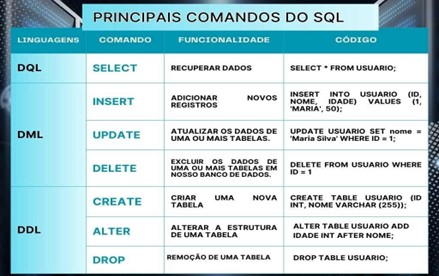
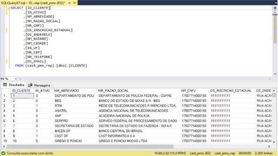

Unidade 02
Apresentação dos Comandos Para Definição de Estruturas e Manipulação de Dados (DQL/DML/DDL/DCL/DTL)
O que são comandos SQL?
De forma geral, os comandos SQL são instruções ou consultas usadas para interagir com um banco de dados relacional.
Essas instruções SQL permitem que as pessoas ou aplicativos realizem várias operações, como recuperação, inserção, atualização e exclusão de dados em tabelas de banco de dados.
Os comandos SQL são categorizados em várias linguagens específicas, cada uma com seu propósito de função. Analise a seguir algumas possibilidades:
Vale ressaltar que muitas empresas geralmente possuem vários profissionais de dados diferentes, como os DBAs, Engenheiro de Dados, Analistas de Dados e daí por diante, e que cada um deles possui uma atuação diferente.
Dessa forma, nem todas as pessoas vão usar todos os comandos. Inclusive, o uso acidental de um comando pode resultar na perda de dados valiosos.
Nesses casos, geralmente existem camadas de proteção de ações que podem ser executadas por cada grupo, dependendo da sua necessidade.
Para uma abordagem mais aprofundada, considere ler o artigo sobre Comandos básicos, que apresenta um pouco mais sobre os principais comandos SQL.
A linguagem SQL é uma só, porém ela é dividida em tipos de acordo com a funcionalidade dos comandos.
Apresentação dos Subconjuntos do SQL(DQL/DML/DDL/DCL/DTL)
DQL (Data Query Language)
Os comandos DQL são usados para consultas:
SELECT: Recupera dados de uma ou mais tabelas do banco de dados. É o comando principal para consultas.
COMANDO: SELECT * FROM Clientes;
Então, por exemplo, suponha que temos uma tabela chamada "Clientes" com as colunas ID, Nome e Idade, e queremos recuperar todos os registros desta tabela.
DML (Data Manipulation Language)
Os comandos DML são usados para manipular os dados:
INSERT: O comando INSERT é usado para adicionar novos registros a uma tabela.
COMANDO: INSERT INTO Clientes (Nome, Idade) VALUES ('João', 30);
Com este comando, será adicionado um novo registro com o nome João e idade 30 à tabela "Clientes".
UPDATE: O comando UPDATE é usado para modificar registros existentes em uma tabela.
COMANDO: UPDATE Clientes SET Nome = 'Maria' WHERE ID = 1;
Com este comando, será realizada a atualização do nome do cliente com ID 1 para Maria.
DELETE: O comando DELETE é usado para remover registros de uma tabela.
COMANDO: DELETE FROM Clientes WHERE ID = 2;
Com este comando, é possível excluir o cliente com ID 2 da tabela Clientes.
DDL (Data Definition Language)
Os comandos DDL são usados para definir a estrutura do banco de dados:
CREATE: Cria objetos de banco de dados, como tabelas, índices, visões e procedimentos armazenados.
COMANDO: CREATE TABLE usuario (id INT, nome VARCHAR (255));
Os bancos de dados relacionais guardam seus dados dentro de tabelas que são divididas em colunas. Desta forma, veremos abaixo a criação de uma tabela de usuário. Ao criar, especificaremos as suas colunas e quais tipos de dados elas irão receber (neste caso, um ID e o nome do usuário).
ALTER: Modifica a estrutura de objetos de banco de dados existentes, como adicionar ou remover colunas de tabelas.
COMANDO: ALTER TABLE usuario ADD idade INT AFTER nome;
No exemplo, adicionaremos uma nova coluna a nossa tabela de usuário criada acima. Esta nova coluna “idade” será criada após a nossa coluna “nome”, desta forma, usaremos:
DROP: Exclui objetos de banco de dados, como tabelas, índices ou visões.
COMANDO: DROP DATABASE banco_teste;
DROP TABLE usuario;
O comando DROP é utilizado para remoção de uma tabela ou do banco de dados por completo.
DCL (Data Control Language)
Os comandos DCL controlam permissões de acesso e os comandos:
GRANT: Concede permissões a usuários ou funções para acessar objetos de banco de dados.
REVOKE: Remove permissões previamente concedidas a usuários.
DTL (Data Transaction Language) - Linguagem de Transação de Dados.
São os comandos para controle de transação:
EGIN TRAN (OU BEGIN TRANSACTION) - Marca o começo de uma transação no banco de dados que pode ser completada ou não.
COMMIT - Envia todos os dados da transação permanentemente para o banco de dados.
ROLLBACK - Desfaz as alterações feitas na transação realizada
Cada categoria de comandos tem um propósito específico e é usada em diferentes estágios do ciclo de vida de um banco de dados.
Essas categorias formam a base do SQL e permitem a administração e manipulação eficazes de dados em um banco de dados relacional.
Dessa forma, nem todas as pessoas vão usar todos os comandos. Inclusive, o uso acidental de um comando pode resultar na perda de dados valiosos.
Nesses casos, geralmente existem camadas de proteção de ações que podem ser executadas por cada grupo, dependendo da sua necessidade.

Criação de um Banco de Dados Para Um Caso Específico
